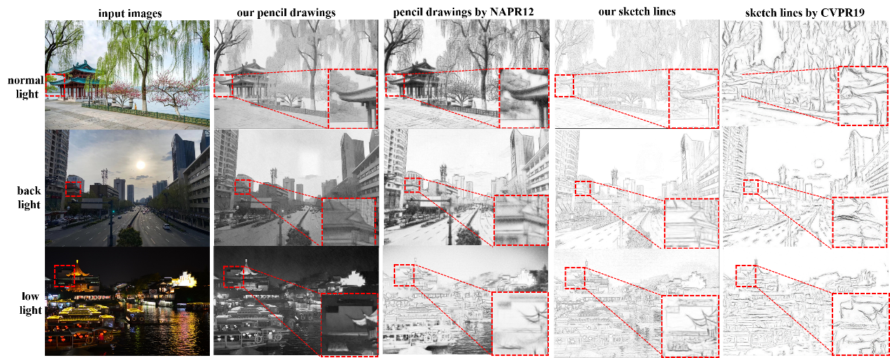
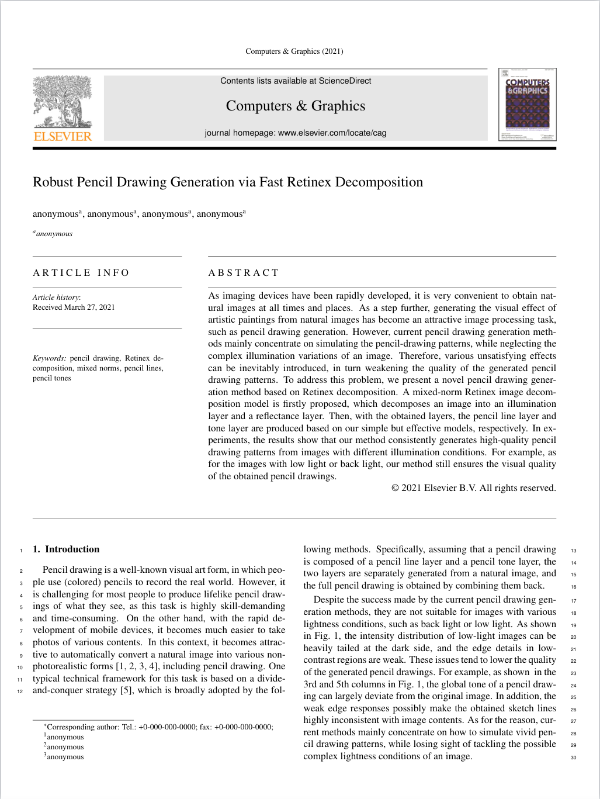

Teng Li[1] Shijie Hao[1, *] Yanrong Guo[1]
1 Hefei University of Technology
[Email]: tengli.terry@gmail.com
|
 |
Abstract
As imaging devices have been rapidly developed, it is very convenient to obtain natural images at all times and places. As a step further, generating the visual effect of artistic paintings from natural images has become an attractive image processing task, such as pencil drawing generation. However, current pencil drawing generation methods mainly concentrate on simulating the pencil-drawing patterns, while neglecting the complex illumination variations of an image. Therefore, various unsatisfying effects can be inevitably introduced, in turn weakening the quality of the generated pencil drawing patterns. To address this problem, we present a novel pencil drawing generation method based on Retinex decomposition. A mixed-norm Retinex image decomposition model is firstly proposed, which decomposes an image into an illumination layer and a reflectance layer. Then, with the obtained layers, the pencil line layer and tone layer are produced based on our simple but effective models, respectively. In experiments, the results show that our method consistently generates high-quality pencil drawing patterns from images with different illumination conditions. For example, as for the images with low light or back light, our method still ensures the visual quality of the obtained pencil drawings.
Conclusion and Outlook
In this paper, we introduce a new method for generating a pencil drawing image from a natural image, which is robust
to the complex illumination conditions.
Firstly, by constructing a Retinex image decomposition model based on mixed norms, we stably obtain the illumination
layer and the reflectance layer from the input image.
On this basis, we build very simple but effective pencil line and tone generation models, respectively, producing
the pencil line layer and tone layer that well simulate some human drawing habits.
In experiments, we validate our method on the real-world photographs that have different illumination conditions.
The experimental results,
including the visual results and quantitative temporal costs and user rating scores , demonstrate the effectiveness
of our method.
Our method still has the following aspects of improvements.
First, we produce the color pencil drawing only based on the color space of a photorealistic image, which can be
still different from the color pattern of professional pencil drawings.
Second, our method still highly depends on low-level information, which possibly fails to carefully refine the
semantically important contents in our drawings.
We plan to focus on these two issues in the following research.
Misc
[code(demo)]: The demo MATLAB implementation is released in this branch on Github.
[code(source)]: The source code of MATLAB implementation is released in this branch on Github.
[test data]: The test data are collected from the Internet.
Paper Access
|
 |
"Robust Pencil Drawing Generation via Fast Retinex Decomposition" Teng Li, Shijie Hao, Yanrong Guo [C] CAD/Graphics 2021; [J] Computers & Graphics The 17th International Conference on Computer-Aided Desigh and Computer Graphics [Paper (pdf)] |
Acknowledgement
The research was supported by the National Undergraduate Innovation and En-trepreneurship Training Program with Grant No. 202010359089.